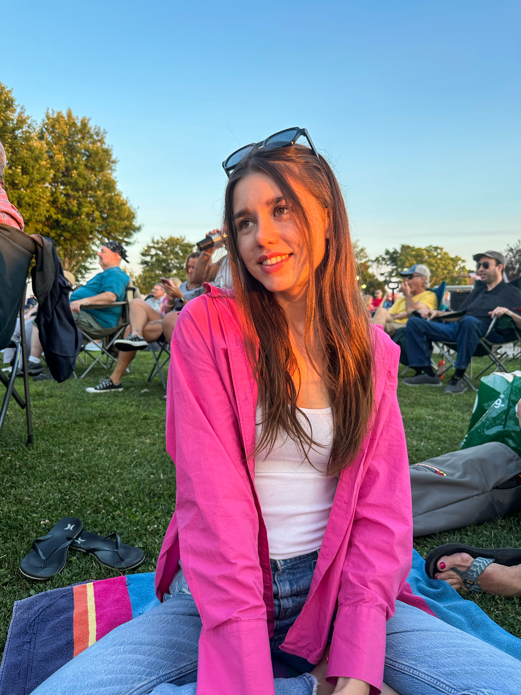

Get to Know Margaret Louise Filkorn

Introduction
Louise Filkorn is an aspiring Informatics Specialist with a wide range of interests and skills. When she is not working hard in her various data analytics classes, she is representing UMass through her achievements on the Alpine Ski Team.
As the vice president of the student-led club team, she has fostered a community of incredible ski racers by leading and supporting her teammates. In addition, she is a member of Alpha Chi Omega and spends time engaging in philanthropic activities to support domestic violence survivors.